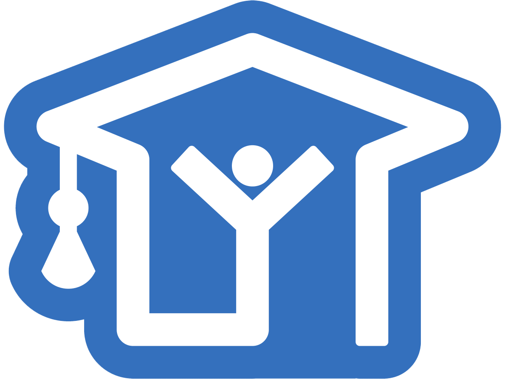

I don't have much of achievments but certainly there are some things that I am PROUD of.


JEE Advanced
Whatever I have Done in my life but Clearing Jee Advanced Still remains number one. Well thats a thing I am too much proud of. And I think that'll always be one of my greatest achievments

Coding
Well I just started coding after I joined the Institute but I have to say that it has become a vital part of who I am, I love everything about it and actually the achievement part is th Ex in PDS

Spring Fest 2020
I was an ASM for SF 2020. That whole journey tought me a lot and I think I came out of it as a much better version of myself. Those 3 days will always have a special space in my heart.

Web Development
Well I just started with WEb Development. Actually this site is my second peice of work.I consider all these projects as achievements because I never thought I could build a whole website